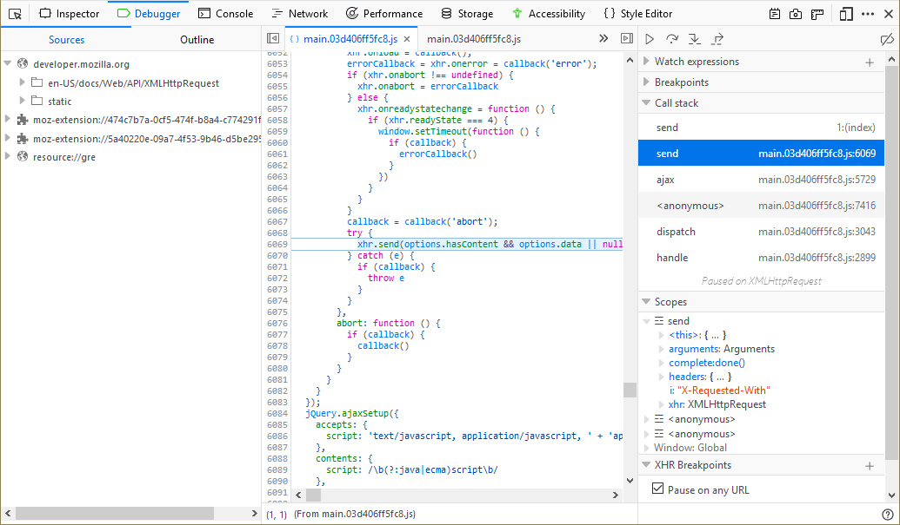

{{ToolsSidebar}}
An XHR (XMLHttpRequest) breakpoint breaks code execution when an XHR request is dispatched so that you can examine the current state of the program. You can break on all requests or on those that include a specific URL. To turn on the feature:
Note: If you enter a key word instead of a URL, code execution will pause on any call to a URL that contains that keyword.
When your code breaks on an XHR request, the righthand pane will have two additional sections:

New in Firefox 71, the source pane now gives you an instant preview of the variables on each line of code you've stepped through. See Set a breakpoint > Inline variable preview for more information.